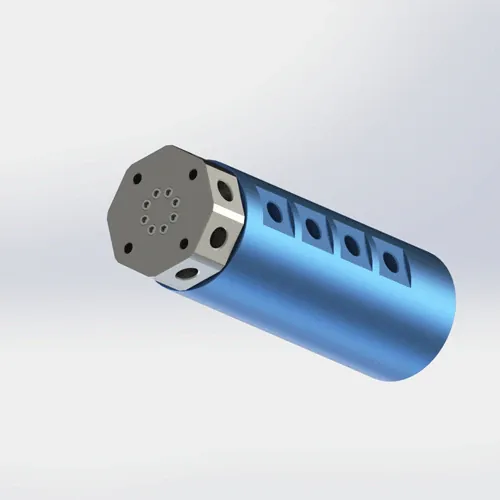

Восьмиканальное фланцевое соединение для пневматики и совместимых маловязких жидкостей. До заказа подтвердите чертёж и срок.
BP-8P-0001 — восьмиканальное соединение для пневматики и совместимых маловязких жидкостей. Чертёж подтверждает сплав 6061, PTFE с O-кольцом, 1 МПа, 200 об/мин и 850 г.
| Обозначение модели | BP-8P-0001 |
|---|---|
| Количество каналов | Восьмиканальное исполнение |
| Способ монтажа | фланцевое крепление (4-М5) |
| Максимальное рабочее давление | 1 МПа (10 bar/145 psi) |
| Максимальная скорость вращения | 200 об/мин |
| Материал корпуса | Алюминиевый сплав AL6061 |
| Тип уплотнения | По чертежу: PTFE-уплотнение + O-кольцо |
| Совместимые рабочие среды | Воздух, вода, водорастворимый охладитель, легкое гидравлическое масло (ISO VG 32 макс.) |
| Рабочая температура | -20°C – +80°C – |
| Масса нетто | Около 0,85 кг (850 г) |
| Условия гарантии | Указаны в коммерческом предложении/заказе |
Пригодность материалов и уплотнений подтверждается для выбранного исполнения. До заказа проверьте утверждённый чертёж, сплав корпуса, материал уплотнения, рабочую среду, давление, частоту вращения, температуру, режим работы и условия эксплуатации.
Для применений с восемью отдельными каналами. Сверьте каналы, фланец, среду, давление, скорость и температуру.
Правильный монтаж помогает снизить риск преждевременного износа уплотнений и подшипников. Перед вводом в эксплуатацию проверьте крепление, соосность, соединения и утверждённые рабочие пределы.
Сверьте фланец с официальным 2D-чертежом. Не используйте другой диаметр винтов. Расположение, зацепление, плоскость и момент — по утверждённой инструкции.
Крепите фланец четырьмя M5, в порядке и с моментом по чертежу. После монтажа проверьте вращение и герметичность.
Если выбранная модель оснащена упором против проворачивания, закрепите его на неподвижном кронштейне винтом M3. Не допускайте свободного вращения корпуса вместе с валом. Свободное вращение может скрутить вместе все 8 пневматических шлангов и создать значительную крутящую нагрузку. Используйте жёсткий металлический кронштейн, прикреплённый болтами к раме машины, а не кабельную стяжку или зажим.
Подключайте восемь каналов гибкими шлангами без натяга. Фильтрацию выбирайте по среде и загрязнению; ясно нумеруйте порты.
Вводите вращающееся соединение в работу поэтапно в пределах давления и частоты вращения, разрешённых для машины. На каждом этапе проверяйте каждый канал на утечки и контролируйте трение, нагрев, вибрацию и шум подшипников. Переходите к полной нагрузке только после подтверждения стабильности установки.
Размеры, допуски, крепления 4 × M5, порты G1/8, нумерация и уплотнения — по официальному 2D-чертежу.
Файлы STEP/IGES могут предоставляться для согласованных проектов после проверки требований применения и выбранного исполнения. Форматы и срок предоставления подтверждаются для каждого проекта.
Руководство по фланцу, стопору, восьми шлангам, фильтрации, пуску и обслуживанию. Состав и размер уточняются при предоставлении.
Документы по материалу, покрытию и уплотнению — по конкретному заказу.
Сравните специальное или более лёгкое исполнение, если восемь каналов не соответствуют задаче.
| Ваши требования | Проверка применимости BP-8P-0001 | Рекомендуемая альтернатива | Когда выбрать другую модель |
|---|---|---|---|
| Восемь каналов на поворотном столе | ✅ Подходит — максимальное число каналов в стандартной линейке | — | — |
| Шесть или меньше каналов при жёстком ограничении массы | Хороший, но сверхконкретный | BP-4P-30-0001 + BP-2P-0001 | Несколько меньших соединений могут быть легче и экономичнее, если восемь каналов не нужны. |
| Четыре канала + отверстие Ø30 мм | ❌ Нет центрального сквозного отверстия | BP-4P-30-0001 | 4 прохода с Ø30 мм полым отверстием для кабеля или вала через центр |
| 3 воздушных линии + 6 электрических цепей | Нет электрической интеграции | BP-3P-S06-0001 | Интегрированное кольцо скольжения с 6 схемами одинакового размера корпуса |
| Давление >1.0 МПа | Повышенный рейтинг давления | Инженерный обзор | 1.5 МПа номинальный, стальной корпус, резьбовое крепление для более высокого давления |
| Пыльная или абразивная среда (стальная мельница, литейный завод) | Нет защиты от пыли | BP-2P-50-0001 | Защитный кожух и лабиринт для запылённых условий |
Эти примеры показывают типичные риски выбора и монтажа. Перед вводом в эксплуатацию проверьте утверждённое исполнение и монтажные указания.
Чрезмерный момент затяжки может повредить алюминиевую резьбу или деформировать монтажные и уплотнительные поверхности. Затягивайте соединение равномерно по утверждённому чертежу или монтажной спецификации.
Жёсткая трубная обвязка передаёт несоосность и боковую нагрузку на соединение, подшипники и уплотнения. Используйте закреплённые гибкие подводы и завершите выравнивание до затяжки.
Вводите соединение в работу при контролируемых давлении и частоте вращения, а перед полной нагрузкой проверьте отсутствие утечек, повышенного трения, нагрева и вибрации.
Другие модели Begapunk, если требуется меньше каналов.
Материал, уплотнение, испытания и документы соответствия действуют только по утверждённому чертежу и заказной документации.
Да — композитное уплотнение из ПТФЭ совместимо с водой, водорастворимой СОЖ и маловязким гидравлическим маслом до ISO VG 32. Корпус из алюминиевого сплава 6061 анодирован для дополнительной защиты от коррозии. Для непрерывной работы с водой допустимые давление и частота вращения выбранного исполнения подтверждаются по актуальной странице изделия, согласованному чертежу, рабочей среде, температуре и рабочему циклу. Анодированная поверхность обеспечивает хорошую защиту при периодическом контакте с водой, однако постоянное погружение или агрессивная синтетическая СОЖ могут потребовать никелированного исполнения либо нержавеющей стали 304/316. При использовании деионизированной воды или СОЖ на основе фосфатных эфиров обратитесь в Begapunk для проверки совместимости уплотнения до заказа.
BP-8P-0001 использует фланцевую схему 4-M5 на стандартной окружности. Точные P.C.D., размер отверстий и допуски приведены на 2D-чертежe PDF. До заказа проверьте ответный фланец оборудования. Специальные фланцы с другой P.C.D., числом отверстий или толщиной могут быть рассмотрены; объём и срок подтверждаются в предложении или заказе. Плоскостность поверхности фланца должна быть в пределах 0,05 мм, чтобы обеспечить равномерное сжатие уплотнений всех восьми каналов. Используйте винты M5×16 мм с глубиной зацепления резьбы в ответном фланце не менее 8 мм.
Файлы STEP/IGES могут предоставляться для согласованных проектов после проверки требований применения и выбранного исполнения. Форматы и срок предоставления подтверждаются для каждого проекта.
Рассмотрите другое исполнение, если требуемые число каналов, давление, частота вращения, проходное отверстие, монтаж, среда или защита от окружающей среды выходят за опубликованные пределы этой модели. Окончательная модель, объём доработок, цена и срок поставки подтверждаются после технической проверки.
Число каналов, присоединения и способ монтажа могут быть рассмотрены под конкретное применение. Доступность CAD и срок поставки подтверждаются с учётом модели, количества, объёма доработок и места назначения.
Запросить специальное исполнениеТехническое примечание: При выборе и эксплуатации модели соблюдайте опубликованные пределы, указанные на актуальной странице изделия и согласованном чертеже. Каждое готовое изделие проходит предусмотренный производственный контроль. Фактические характеристики зависят от условий эксплуатации, качества рабочей среды, монтажа и графика технического обслуживания. Для применений за пределами стандартных характеристик — включая гидравлические системы высокого давления, длительное погружение в воду, пищевые применения и чистые помещения — до выбора спецификации необходимо проконсультироваться с инженерной службой Begapunk. Последнее обновление: 11 июня 2026 г.